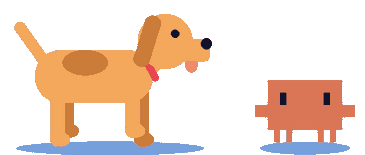

20년 동안 코드로
문제를 풀어온 개발자입니다.
C/C++부터 Java, Python까지, 프론트엔드와 백엔드를 아우르며 소프트웨어를 만들어 왔습니다. 인공지능 석사(컴퓨터 비전)를 바탕으로 AI 기술을 실제 서비스에 접목하는 일에 관심이 많습니다.

20년개발 경력
M.S.인공지능 · 컴퓨터 비전
Full-stackFront-end · Back-end
Experience
재직 기간
파수닷컴
소프트웨어 개발 · 담당 업무와 주요 성과를 적어주세요.
재직 기간
벅스뮤직
소프트웨어 개발 · 담당 업무와 주요 성과를 적어주세요.
그 외
다수 기업
여러 회사에서 다양한 서비스와 시스템 개발에 참여했습니다.
Skills
Languages
C
C++
Java
Python
Development
Front-end
Back-end
Computer Vision
AI
Tools & Infra
Docker
Kubernetes
Git
GitHub
AWS
Education
석사
호서대학교 인공지능학과
컴퓨터 비전 전공
Contact
함께 일하거나 이야기 나누고 싶으시면 편하게 연락 주세요.
이메일 보내기